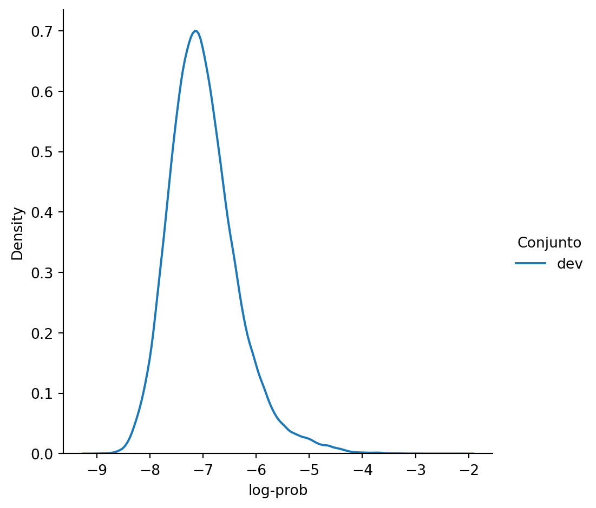

from dataclasses import dataclass
import pprint
from collections import Counter
import numpy as np
import pandas as pd
import seaborn as sns
from transformers import AutoTokenizer
from encexp.utils import load_dataset
pp = pprint.PrettyPrinter(width=60, compact=True).pprint3 Modelado de Lenguaje
El objetivo de la unidad es desarrollar un modelo de lenguaje basado en gramas.
Paquetes usados
3.1 Introducción
Un modelo de lenguaje es una función que permite estimar la probabilidad de un texto, i.e., \(\mathbb P(w_1, w_2, w_n).\) Comunmente, se trata de modelar \(\mathbb P(w_n \mid w_1, w_2, \ldots,w_{n-1}),\) es decir, encontrar una función que estime la probabilidad de la siguiente palabra o segmento, i.e., \(w_N\), dada la historia.
Realizando la suposición de Markov, es decir, que el segmento \(w_n\), es independiente de los segmentos iguales y mayores a \(N\), es decir, \(\mathbb P(w_n \mid w_1, w_2, \ldots,w_{n-1})=\mathbb P(w_n \mid w_{n-N+1}, \ldots, w_{n-1}),\) para \(N < n.\) Por ejemplo, para \(N=2\) el modelo con esta suposición quedaría como \(\mathbb P(w_n \mid w_{n-1})\), en el caso \(N=3\) sería: \(\mathbb P(w_n \mid w_{n-2}, w_{n-1})\) y así sucesivamente.
3.2 Modelo de lenguaje
En este caso el modelo para el siguiente segmento quedaría como
\[ \begin{split} \mathbb P(w_n \mid w_{n-N+1}, \ldots, w_{n-1})&=\frac{\#(w_{n-N+1}, \ldots, w_{n-1}, w_n)}{\sum_{\ell} \#(w_{n-N-1}, \ldots, w_{n-1}, \ell)}\\ &=\frac{\#(w_{n-N+1}, \ldots, w_{n-1}, w_n)}{\#(w_{n-N+1}, \ldots, w_{n-1})}, \end{split} \tag{3.1}\]
donde \(\#\) corresponde a la frecuencia medida en un conjunto de entrenamiento. Por ejemplo, para \(N=3\) la Ecuación 3.1 quedaría como
\[ \mathbb P(w_n \mid w_{n-2}, w_{n-1})=\frac{\#(w_{n-2}, w_{n-1}, w_n)}{\#(w_{n-2}, w_{n-1})}. \]
3.2.1 Cálculo de frecuencias en un corpus
Para el modelo de lenguaje se requiere calcular la frecuencia de la secuencia (variable frase), i.e., \(\#(w_{n-N+1}, \ldots, w_{n-1}, w_n)\) y la frecuencia de las palabras previas (variable hist), i.e., \(\#(w_{n-N+1}, \ldots, w_{n-1})\), dependiendo de \(N\). Adicionalmente, se guarda el vocabulario en la variable voc.
voc = Counter()
frase = Counter()
hist = Counter()El conjunto de datos que se utilizará para generar el modelo es el que se obtiene con la función load_dataset y se guarda en la variable dataset.
dataset = load_dataset(lang='es', dataset='dev')El siguiente paso es iterar por todos los elementos del conjunto de datos (variable dataset). En el ciclo se segmenta cada texto y se actualiza el vocabulario con el método voc.update. Después se genera una ventana de tamaño \(N\), donde los índices que corresponden a elementos del vocabulario se concatenan con el caracter |. El siguiente paso es actualizar la frecuencia de la secuencia con el método frase.update. Se realiza un procedimiento equivalente pero para una ventana de tamaño \(N-1\) que corresponde a las palabras previas, actualizando con el método hist.update.
N = 2
bilmaLAT = AutoTokenizer.from_pretrained('guillermoruiz/bilmaLAT')
for ele in dataset:
tokens = bilmaLAT(ele['text']).input_ids
voc.update(tokens)
_ = ["|".join(map(str, lst))
for lst in zip(*[tokens[i:] for i in range(N)])]
frase.update(_)
_ = ["|".join(map(str, lst))
for lst in zip(*[tokens[i:] for i in range(N-1)])]
hist.update(_)- 1
- Carga el modelo bilmaLAT
- 2
- Iteración por todos los textos
- 3
- Segmentación de un texto
- 4
- Actualización de vocabulario
- 5
- Iteración para estimar y actualizar la frecuencia de frases
- 6
- Iteración para estimar y actualizar la frecuencia de historia
La siguiente instrucción muestra las diez secuencias más frecuentes en el conjunto de datos analizado.
pp([bilmaLAT.decode(list(map(int, k.split("|"))))
for k, v in frase.most_common(10)])['_url [SEP]', '_usr _usr', '[CLS] _usr', '. [SEP]',
'de la', '[CLS] #', 'en el', 'en la', 'a la', '. _url']Completando el ejemplo anterior, la siguiente instrucción muestra la secuencia de palabras previas que tiene la mayor frecuencia.
pp([bilmaLAT.decode(list(map(int, k.split("|"))))
for k, v in hist.most_common(10)])['[CLS]', '[SEP]', '_usr', 'de', ',', '.', 'que', '#', 'la',
'y']
TipActividad
Seleccione de los siguientes trigamas aquel que tenga una mayor frecuencia:
- [CLS] _usr _usr
- . Más en
- ) _url [SEP]
3.2.2 Organizando en una clase
La implementación del modelo de lenguaje, en particular de la estimación de las frecuecias descrita en Listado 3.1 se organiza en la clase Frec que se muestra en Listado 3.2. La clase recibe el parámetro N que indica el tamaño de la ventana y inicializa las variables voc, frase, y hist donde se guardará la frecuencia del vocabulario, de los gramas y de los \(N-1\) gramas.
class Frec:
def __init__(self, N: int=2):
self.N = N
self.voc = Counter()
self.frase = Counter()
self.hist = Counter()
@property
def segmentador(self):
try:
return self._segmentador
except AttributeError:
_ = AutoTokenizer.from_pretrained('guillermoruiz/bilmaLAT')
self._segmentador = _
return _
def fit(self, X, y=None):
seg = self.segmentador
N = self.N
for ele in X:
_ = self.get_text(ele)
tokens = seg(_).input_ids
voc.update(tokens)
_ = ["|".join(map(str, lst))
for lst in zip(*[tokens[i:] for i in range(N)])]
self.frase.update(_)
_ = ["|".join(map(str, lst))
for lst in zip(*[tokens[i:] for i in range(N-1)])]
self.hist.update(_)
self.voc = len(voc)
return self
def get_text(self, ele):
if isinstance(ele, dict):
return ele['text']
return ele- 1
- Tamaño de la ventana
- 2
- Vocabulario
- 3
- Frecuencia de los gramas
- 4
- Frecuencia de los gramas previos
- 5
- Segmentador mediante el modelo bilmaLAT
- 6
- Estimación de frecuencias ver Listado 3.1
- 7
- Función auxiliar para utilizar una lista de diccionarios.
Nota
Calculando las diez secuencias más frecuentes en el conjunto de datos utilizando la clase Frac. Lo primero que se tiene que realizar es estimar las frecuencias como se muestra en el siguiente código.
frec = Frec().fit(dataset)El siguiente código utiliza las frecuencias estimadas para mostrar las diez más frecuentes.
pp([bilmaLAT.decode(list(map(int, k.split("|"))))
for k, v in frec.frase.most_common(10)])['_url [SEP]', '_usr _usr', '[CLS] _usr', '. [SEP]',
'de la', '[CLS] #', 'en el', 'en la', 'a la', '. _url']3.3 Probabilidad
Después de calcular las frecuencia, es posible estimar la probabilidad de una frase. Considerando que \(N=2\) entonces es directo calcular la probabilidad de la siguiete frase.
txt = 'buenos días'Lo primero es verficar que la frase se codifica en 2 índices, tal y como se muestra a continuación.
code = bilmaLAT(txt)['input_ids'][1:-1]
code[12658, 11468]El siguiente paso es dividir la frecuencia de la cadena buenos dias entre l frecuencia de buenos tal y como se muestra en la siguiente instrucción.
frase["|".join(map(str, code))] / hist["|".join(map(str, code[:-1]))]0.2724795640326976Otro ejemplo similar es calcular la probabilidad de buenox. Como se puede observar en el siguiente código, esa palabra se codifica en dos índices, entonces se puede seguir un procedimiento equivalente.
txt = 'buenox'
code = bilmaLAT(txt)['input_ids'][1:-1]
code[11683, 5896]Como muestra el resultado de la siguiente celda la probabilidad de buenox es cero, dado que esa palabra no fue vista en el conjunto de datos donde se estimó la frecuencia.
frase["|".join(map(str, code))] / hist["|".join(map(str, code[:-1]))]0.03.3.1 \(k\)-suavizado
Para poder calcular la probabilidad de una secuencia, es necesario calcular una probabilidad diferente de cero a cualquier palabra que no ha sido vista en el conjunto donde se estiman las frecuencias. Una manera para realizar esto es asignar una pequeña masa a todas las palabras que no fueron vistas, a eso se le conoce como suavizado.
La función prob implementa un tipo de suavisado donde se le asigna un valor de \(\frac{1}{\mid V \mid}\) a todas las palabras que no son vistas, donde \(\mid V \mid\) es el tamaño del vocabulario.
def prob(txt, k=0.01):
code = bilmaLAT(txt)['input_ids'][1:-1]
num = frase["|".join(map(str, code))] + k
den = hist["|".join(map(str, code[:-1]))] + k * len(voc)
return num / denSe puede observar que la probabilidad de la siguiente frase es menor que cuando no se usa el suavizado, esto es porque una fracción de la masa de probabilidad se está utilizando en elementos no vistos.
prob('buenos días')0.17078502023600128Complementando lo anterior, la palabra buenox presenta una probabilidad mayor a cero utilizando el suavizado.
prob('buenox')7.766447393968577e-063.3.2 Probabilidad de una secuencia
La implementación anterior se puede adaptar para calcular la probabilidad de una frase de cualquier longitud mayor o igual a \(N\).
La idea es crear una ventana movil de tamaño \(N\) y multiplicar todas las probabilidades obtenidas, considerando que la multiplicación entre números menores a \(1\) resulta en un número menor, es más conveniente por razones numéricas el calcular la suma del logaritmo de la probabilidad.
La siguiente función calcula la suma y el promedio del logaritmo de la probabilidad.
def log_prob(ele, k=1, average=True):
tokens = bilmaLAT(ele['text']).input_ids
acc = 0
for code in zip(*[tokens[i:] for i in range(N)]):
num = np.log(frase["|".join(map(str, code))] + k)
den = np.log(hist["|".join(map(str, code[:-1]))] + k * len(voc))
acc += num - den
if average:
return acc / len(tokens)
return acc- 1
- Iteración por todos los gramas de la frase
- 2
- Numerador y denominador de la Ecuación 3.1
- 3
- Calculando el promedio
La función log_prob se puede utilizar para calcular la probabilidad de todas las frases en el conjunto utilizado para estimar las frecuencias tal y como se muestra en la siguiente instrucción.
acc = [log_prob(ele) for ele in dataset]La distribución del promedio del logaritmo de probabilidad se muestra en la siguiente figura.
df = pd.DataFrame()
df['log-prob'] = acc
df['Conjunto'] = 'dev'
sns.displot(data=df, x='log-prob', hue='Conjunto',
kind='kde', fill=False)
Para poder presentar otro análisis del modelo, se utiliza otro conjunto de datos, donde cada elemento del conjunto de datos tiene asociado el país de origen. Este valor se encuentra en la clave country de cada diccionario.
Nota: La siguiente celda puede tardar unos cuantos minutos en ejecutarse.
paises = load_dataset(lang='es', dataset='train')La siguientes instrucciones modelan los datos obtenidos de México y Argentina respectivamente.
mex = [log_prob(ele) for ele in paises if ele['country'] == 'mx']
arg = [log_prob(ele) for ele in paises if ele['country'] == 'ar']La distribución obtenida al modelar estos dos conjuntos de datos se muestra en la siguiente figura.
df = pd.DataFrame()
df['log-prob'] = mex
df['Conjunto'] = 'México'
_ = pd.DataFrame()
_['log-prob'] = arg
_['Conjunto'] = 'Argentina'
df = pd.concat([df, _])
sns.displot(data=df, x='log-prob', hue='Conjunto',
kind='kde', fill=False)
De la figura se puede observar que las dos distribuciones son muy similares, lo cual es de esperarse dado que los datos con los que fueron entrenados tiene el mismo número de ejemplos provenientes de México que de Argentina, pero aun así se observan unas leves diferencias.
Habiendo calculado el promedio del logaritmo de la probabilidad, uno se puede preguntar ¿cuál es la frase más probable en México? la siguiente instrucción muesta esta frase para el conjunto de datos analizado.
mex_ds = [x for x in paises if x['country'] == 'mx']
mex_ds[np.argmax(mex)]{'text': '_usr jajajajajajajajajajajajajajajajajajajajajajajajajajaja',
'country': 'mx'}3.4 Encapsulando el modelo de lenguaje de gramas
El modelo de lenguaje de gramas se organiza en la clase ModeloNGram. Esta clase hereda la funcionalidad de la clase Frec (ver Listado 3.2) y lo complementa implementando el cálculo de la probabilidad de una frase utilizando k-suavizado (ver Listado 3.3).
class ModeloNGram(Frec):
def __init__(self, N: int=2,
k_suavizado: float=1,
promedio: bool=False):
super(ModeloNGram, self).__init__(N)
self.k_suavizado = k_suavizado
self.promedio = promedio
def _log_prob(self, ele):
tokens = self.segmentador(self.get_text(ele)).input_ids
acc = 0
k = self.k_suavizado
for code in zip(*[tokens[i:] for i in range(self.N)]):
num = np.log(self.frase["|".join(map(str, code))] + k)
den = np.log(self.hist["|".join(map(str, code[:-1]))] + k * self.voc)
acc += num - den
if self.promedio:
return acc / len(tokens)
return acc
def log_prob(self, X):
_log_prob = self._log_prob
return np.c_[[_log_prob(x) for x in X]]- 1
- Valor del suavizado
- 2
- Bandera que indica el cálculo del promedio
- 3
- Logaritmo de la probabilidad de la frase, ver Listado 3.3
- 4
- Calcula el logaritmo de la probabilidad para una lista de textos
Nota
modeloNGram = ModeloNGram(promedio=True).fit(dataset)El logaritmo de la probabilidad de la primera frase de dataset, calculada previamente (variable acc), tiene un valor de -7.6760. Utilizando la implementación del modelo de lenguaje de gramas (ver Listado 3.4), inicializado con dataset, y contenido en la variable modeloNGram se obtiene el logaritmo mostrado en la siguiente instrucción.
modeloNGram.log_prob(dataset[:1])array([[-7.67601452]])